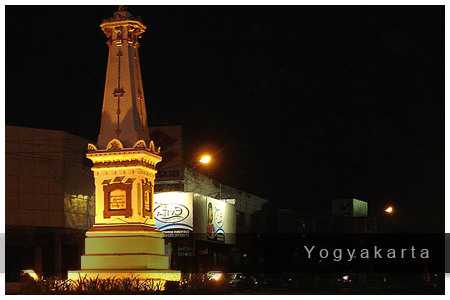

Paket Wisata Dieng dari Jogja – Start Your Highland Journey Here
Liburan ke Dieng makin mudah buat kamu yang berangkat dari Yogyakarta. Semua urusan transportasi, itinerary, sampai fasilitas sudah disiapkan, tinggal pilih tanggal dan siap dijemput langsung dari Jogja—bisa dari rumah, hotel, stasiun, atau bandara. Nikmati suasana pegunungan, destinasi populer, dan udara segar Dieng dengan perjalanan yang santai tanpa ribet transit.
Paket ini cocok buat siapa saja yang ingin eksplor Dieng bersama pasangan, sahabat, atau keluarga kecil. Tersedia pilihan trip 1 hari, 2 hari 1 malam, atau 3 hari 2 malam. Semua perjalanan didampingi tim lokal berpengalaman, transportasi nyaman, serta akomodasi yang bisa disesuaikan dengan kebutuhanmu. Kamu bisa request destinasi favorit atau ikuti rekomendasi itinerary yang sudah terbukti seru.
Setiap perjalanan sudah termasuk layanan makan, tiket wisata, dokumentasi foto basic, hingga air mineral. Seluruh proses reservasi dan komunikasi dilakukan mudah, cukup hubungi tim kami dan semua kebutuhan trip akan diatur secara detail.
Pilihan Paket & Durasi
- Paket 1 Hari: Cocok untuk kamu yang ingin pulang-pergi tanpa menginap. Semua spot utama Dieng bisa dikunjungi dengan rute efisien.
- Paket 2 Hari 1 Malam: Lebih santai, bisa merasakan malam di Dieng, menikmati sunrise dan suasana pegunungan di pagi hari.
- Paket 3 Hari 2 Malam: Waktu lebih fleksibel, itinerary lebih banyak, dan liburan makin maksimal.
Fasilitas
- Transportasi full AC (mobil/vip car sesuai kebutuhan) penjemputan dari area Jogja
- Driver profesional & tour leader lokal
- Akomodasi privat (homestay/hotel Dieng, bisa pilih kamar sesuai request)
- Layanan makan sesuai itinerary
- Tiket masuk destinasi wisata pilihan
- Dokumentasi foto basic
- Air mineral setiap hari
- Parkir, tol, retribusi (all-in)
Rekomendasi Destinasi & Aktivitas
- Sunrise Bukit Sikunir
- Telaga Cebong
- Kawah Sikidang
- Komplek Candi Arjuna
- Batu Ratapan Angin
- Dieng Plateau Theater
- Taman Pintu Langit
- Pemandian Air Panas
- Kahyangan Skyline
- Dieng Park
- Bukit Scooter (sore/sunset)
- Air Terjun Sikarim
- Telaga Menjer
- Perkebunan Teh
- Sentra Oleh-oleh & Kuliner
- Cafe atau area chill di Dieng/Wonosobo
Bebas request destinasi sesuai keinginan atau cukup ikuti itinerary rekomendasi dari tim lokal agar waktu lebih efisien. Tersedia juga opsi aktivitas tambahan seperti sesi foto, piknik privat, atau healing di spot-spot hidden gem.
Panduan Trip Dieng dari Jogja
Perjalanan dari Jogja ke Dieng ditempuh sekitar 3,5–4,5 jam, tergantung rute dan kondisi lalu lintas. Sepanjang perjalanan, kamu akan melewati jalur pegunungan, sawah, dan desa-desa asri di Jawa Tengah. Semua proses penjemputan, makan, hingga akomodasi sudah dipastikan nyaman. Trip ini fleksibel—waktu keberangkatan bisa diatur sesuai preferensi, itinerary bisa diubah kapan saja sesuai mood.
FAQ Paket Dieng dari Jogja
Bisa dijemput di mana saja di Jogja?
Bisa, penjemputan bisa dari rumah, hotel, stasiun, bandara, atau meeting point lain di wilayah Yogyakarta.
Apakah bisa request destinasi dan durasi?
Bisa, itinerary, destinasi, dan durasi trip bebas diatur sesuai keinginan peserta. Silakan diskusi dengan tim sebelum berangkat.
Ada minimal peserta?
Tidak ada, trip bisa berangkat walau hanya dua orang atau grup kecil. Untuk grup besar, bisa request armada khusus.
Termasuk makan dan tiket wisata?
Sudah termasuk makan sesuai itinerary, tiket masuk wisata, dan fasilitas utama lainnya.
Bagaimana jika ingin tambahan hari atau upgrade hotel?
Bisa request tambahan hari atau upgrade fasilitas, tinggal infokan ke tim reservasi.